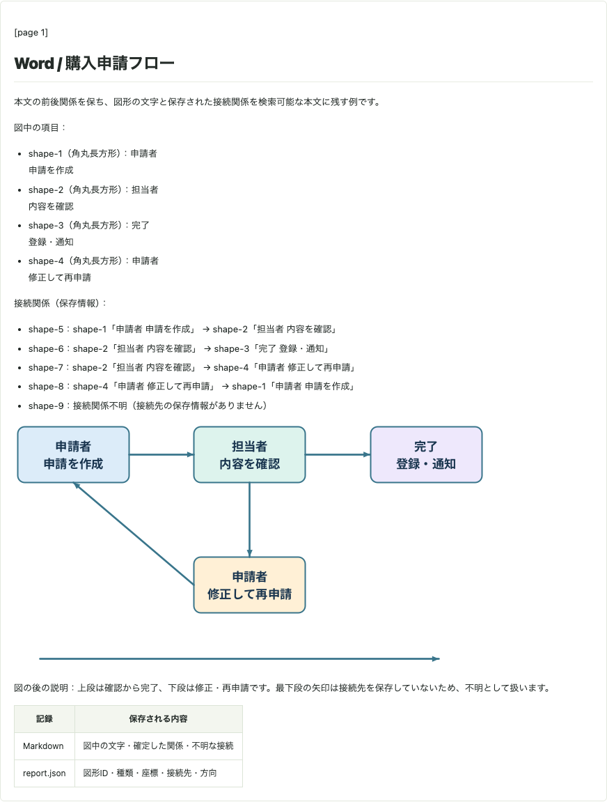
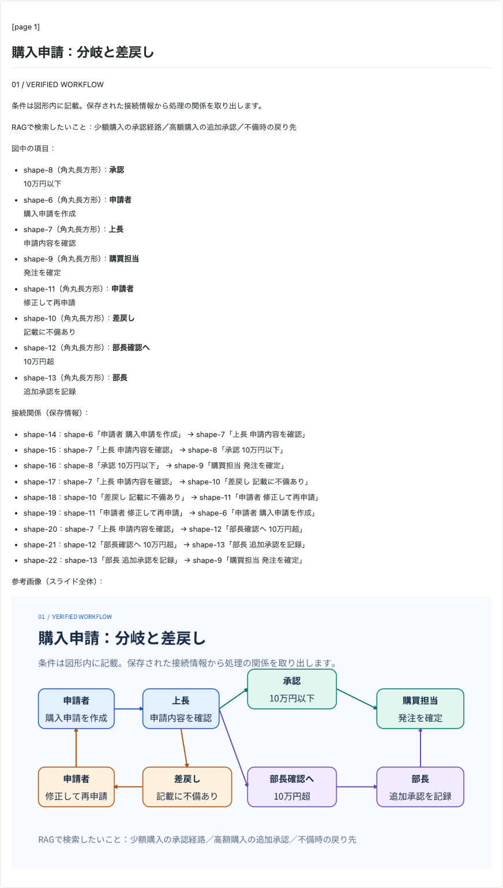
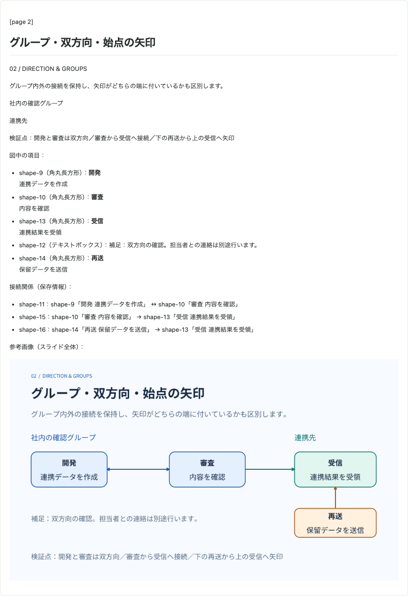
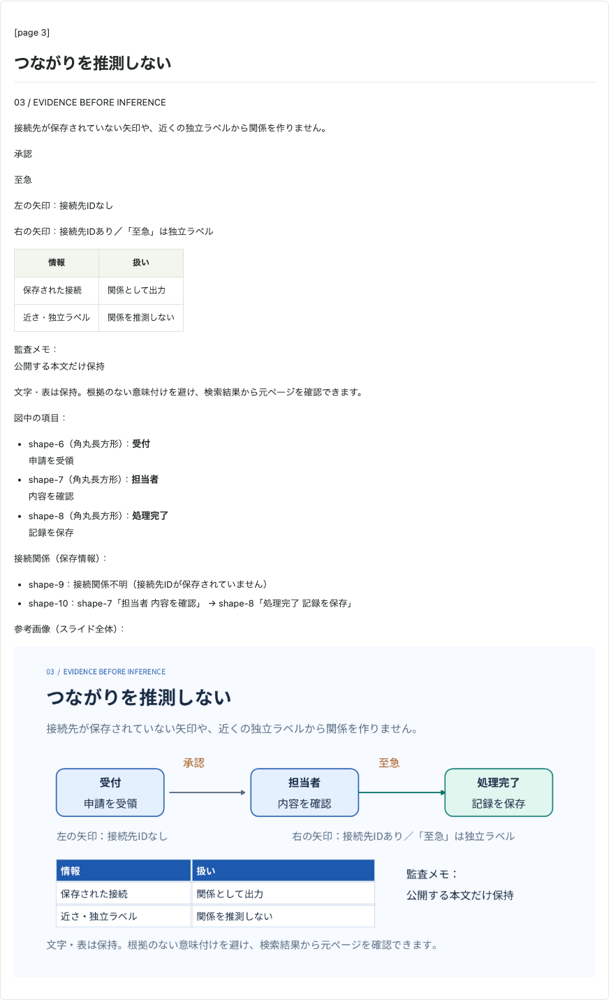

Office → Markdown / Actual examples
実際の変換例
複数シートのExcel、変更履歴を含むWord、グループ図形を含むPowerPointを、実際のAPIとPlaygroundで変換しました。入力・変換結果・警告をまとめて確認できます。
すべてこのリポジトリで作成したオリジナル資料です。掲載画像は実行後のPlaygroundを撮影したもので、変換結果の文章や図を補正していません。出力ZIPには document.md・report.json・images/ が入っています。
Excel：13シートの包括例
文章、7個の表、数式キャッシュ、図形・画像、非表示・未対応要素を一度に確認。
Word：変更履歴と脚注
見出し、罫線なしの結合表、番号、脚注、回転図形と画像。
PowerPoint：表と図形の本文抽出
4表示＋1非表示スライド。グループの図形・接続線・リンク・日本語を抽出。
RAG向け業務フローのデモ：Word · PowerPoint。入力・実変換Markdown・JSON・スクリーンショットを掲載しています。
このページは同期HTTPの実行例です。非同期HTTP・直接Queueも同じ変換コアを使いますが、ここでQueue経由の動作やAzure上の性能を測定したものではありません。PowerPointは図中の文字・保存された接続関係を本文にし、配置はJSON、見た目はスライド全体の参考画像へ残します。Word・Excelも図形の文字と保存済み接続を本文に残します。Wordは描画グループ・キャンバス、Excelは明示グループまたは解決した接続を確認用画像にまとめます。
Excel：文章・表・図形・未対応要素を含む13シート
13シートから、出力内容のある8シートを残します。非表示2シートと空・取消線のみ・罫線のみの3シートは除外されます。7個の罫線表、部分太字・リンク・取消線、結合セル、保存済みの数式結果、画像の重複、入れ子グループ・回転・接続線・未対応グラフを同じファイルに含めています。


{kind=link}

{kind=link}

数式は再計算しません。1+2 に意図的に保存したキャッシュ 999 は、出力も 999 です。IMAGE 関数の画像は取得せず未対応表示になります。32アセットには確認用PNGとBMP添付を含みます。PNG/JPEGの回転・反転は確認用画像に反映し、同じ描画結果の画像ファイルは共有します。画像の切り抜きは未対応です。
実際のMarkdown抜粋：表
| | | | |
| --- | --- | --- | --- |
| **項目** | **数量** | | **備考** |
| 売上 | 12 | | 通常と**重要**の混在 |
| | | | |
| 予算 | 0 | | 上限 \| 下限 |
| 取消線 | | | 残る説明 |
| リンク | | | [表のリンク<br>2行目](https://example.com/table) |
| | | |
| --- | --- | --- |
| **別の表** | **値** | **状態** |
| 東日本 | 100 | OK |
| 西日本 | 200 | OK |
| 合計 | 300 | 完了 |
| | | |
| --- | --- | --- |
| **片側罫線** | **値** | **備考** |
| 中段 | 2 | |
| 最終行 | 3 | 閉じた格子 |
| | |
| --- | --- |
| **可視の項目** | **値** |
| 表示される行 | 42 |
| 末尾 | 43 |
| | | |
| --- | --- | --- |
| **結合した見出し** | | |
| A項目 | 10 | 完了 |
| B項目 | 20 | 確認中 |
| C項目 | 30 | 完了 |
| **商品名** | **個数** | **単位** |
| --- | --- | --- |
| りんご | 3 | 個 |
| みかん | 5 | 個 |
| バナナ | 2 | 本 |
スタイルだけの表 値 備考
データA 10 直接罫線なし
データB 20 文章として出力
データC 30
**単一セルの囲みは文章** **閉じていない罫線** **値** **備考**
途中の行 10 文章として保持
最終の行 20 右下の外周が欠ける
下線だけでは表にしません
条件付き書式の見た目は再評価せず、通常の保存値と直接書式を使います。
100実際のMarkdown抜粋：数式キャッシュと外部画像
保存キャッシュ999（数式は1\+2） 999
数式の通貨表示 ¥12,345
キャッシュなしの数式 =1\+2
リンク先と表示が文字列リテラル [数式の公式リンク](https://poi.apache.org/spreadsheet/)
リンク先は固定、表示は保存値 [保存されたリンク表示](https://example.com/cached)
リンク先が動的ならリンク化しない 動的なリンク表示
IMAGE関数は取得しない \[セル内画像: 未対応\]
取消線がある数値も除外実際のreport.json：未対応・近似・不明な接続の警告
[
{
"code": "LINK_UNSUPPORTED",
"section": "01_文章と書式",
"range": "A26",
"message": "Web・メール以外または不正なリンクを表示文字だけで保持しました。"
},
{
"code": "LINK_UNSUPPORTED",
"section": "01_文章と書式",
"range": "A27",
"message": "Web・メール以外または不正なリンクを表示文字だけで保持しました。"
},
{
"code": "LINK_UNSUPPORTED",
"section": "01_文章と書式",
"range": "A28",
"message": "Web・メール以外または不正なリンクを表示文字だけで保持しました。"
},
{
"code": "CONDITIONAL_FORMATTING_UNEVALUATED",
"section": "02_罫線の表",
"message": "条件付き書式の罫線・太字・取消線は評価していません。"
},
{
"code": "BORDER_NOT_TABLE",
"section": "02_罫線の表",
"range": "A3:I42",
"message": "罫線だけでは表として確定できない部分があります。検出した表の左右の値は表に取り込み、それ以外は本文として保持します。"
},
{
"code": "TABLE_MERGE_FLATTENED",
"section": "02_罫線の表",
"range": "A20:C23",
"message": "Markdown表はセル結合を再現できないため、結合の続きは空欄です。"
},
{
"code": "FORMULA_CACHE_MISSING",
"section": "03_表示値と数式",
"range": "C20",
"message": "数式の保存済み計算結果がありません。再計算せず、数式または確定できるリンク表示を残しました。"
},
{
"code": "FORMULA_CACHE_MISSING",
"section": "03_表示値と数式",
"range": "C22",
"message": "数式の保存済み計算結果がありません。再計算せず、数式または確定できるリンク表示を残しました。"
},
{
"code": "DYNAMIC_HYPERLINK_UNSUPPORTED",
"section": "03_表示値と数式",
"range": "C24",
"message": "数式のリンク先を定数として読み取れないため、リンク化していません。"
},
{
"code": "CELL_IMAGE_UNSUPPORTED",
"section": "03_表示値と数式",
"range": "C26",
"message": "IMAGE関数の画像は取得しません。"
},
{
"code": "FORMULA_CACHE_MISSING",
"section": "03_表示値と数式",
"range": "C26",
"message": "数式の保存済み計算結果がありません。再計算せず、数式または確定できるリンク表示を残しました。"
},
{
"code": "DIAGRAM_CONNECTION_UNRESOLVED",
"section": "05_基本図形",
"range": "A25:E25",
"message": "図形の接続関係を確定できません。接続先の保存情報がありません。配置からは推測しません。図形ID: shape-8"
},
{
"code": "DIAGRAM_CONNECTION_UNRESOLVED",
"section": "05_基本図形",
"range": "G25:K25",
"message": "図形の接続関係を確定できません。接続先の保存情報がありません。配置からは推測しません。図形ID: shape-1-9"
},
{
"code": "DIAGRAM_CONNECTION_UNRESOLVED",
"section": "06_グループと接続",
"range": "A5:M11",
"message": "図形の接続関係を確定できません。接続先の保存情報がありません。配置からは推測しません。図形ID: shape-1-3"
},
{
"code": "GRAPHIC_FRAME_UNSUPPORTED",
"section": "07_未対応と加工",
"range": "E4:Q15",
"message": "グラフ・SmartArtなどの描画は未対応です。"
},
{
"code": "SHAPE_UNSUPPORTED",
"section": "07_未対応と加工",
"range": "A20:E28",
"message": "この種類の図形は未対応です。取得できた取消線除去後の文字を残します。"
},
{
"code": "DRAWING_EFFECTS_SIMPLIFIED",
"section": "07_未対応と加工",
"range": "G20:L28",
"message": "複雑な塗り・効果・自由形状は簡略化または代替表示します。"
},
{
"code": "DRAWING_TEXT_APPROXIMATED",
"section": "07_未対応と加工",
"range": "N20:Q30",
"message": "縦書き・縦方向の文字組みは横書きに近似します。"
},
{
"code": "IMAGE_EFFECTS_IGNORED",
"section": "07_未対応と加工",
"range": "A33:G44",
"message": "切り抜き・画像効果は反映しません。プレビューには回転・反転を反映します。"
},
{
"code": "IMAGE_FORMAT_ATTACHMENT",
"section": "07_未対応と加工",
"range": "J35:P43",
"message": "この画像形式は元ファイルの添付として保持します。"
}
]
Playground全体 · Markdownタブの画面。入力の3か所の説明ラベルは、現在の「文字・接続を本文、グループ・接続単位を確認用画像とする出力」に合わせています。数式・図形・書式等の構造は元の包括サンプルと同じです。
{kind=link}
{kind=link}
接続線は4件あり、保存された接続先から1件を確定しました。ほかの3件は接続先情報がないため不明とし、位置から補いません。図形の文字は通常の本文に、図形ID・位置・接続はJSONに残ります。セルの文章・表はMarkdownのままで、図の画像には含めません。
実際のMarkdown抜粋：グループ・接続・座標JSON
# [06\_グループと接続] シート
**06 グループ・接続・重なり**
**GRP01 明示グループ：文字を本文へ、図形・線・画像は確認用に合成**
図中の項目：
- shape-1-1（角丸長方形）：**グループ**<br>**受付**
- shape-1-2（楕円）：確認<br>完了
- shape-1-4（画像）：明示グループに含まれるPNG
接続関係（保存情報）：
- shape-1-3：接続関係不明（接続先の保存情報がありません）

**GRP02 入れ子グループ：座標の拡大縮小と10度回転**
図中の項目：
- shape-1-5（長方形）：**内側のグループ**<br>**左の図形**
- shape-1-6（角丸長方形）：内側のグループ<br>右の図形
図形間の接続情報はありません。配置から順序や関係を推測していません。

**GRP03 未グループ：コネクターの接続先IDで1枚にまとめる**
図中の項目：
- shape-3（角丸長方形）：**受付**
- shape-4（角丸長方形）：**完了**
接続関係（保存情報）：
- shape-1-9：shape-3「受付」 → shape-4「完了」

**GRP04 未グループ：重なった図形も個別に出力**
図中の項目：
- shape-6（長方形）：背面の四角

図中の項目：
- shape-7（楕円）：**前面の楕円**

**GRP05 背景図形＋PNG：図形と画像を別々に出力**

図中の項目：
- shape-9（画像）：背景図形に重なるPNG
Word：変更履歴・結合表・脚注・回転図形
明示的な見出し、太字とリンク、取消線、変更履歴、罫線なしの結合表、番号、脚注、15度回転した日本語図形、埋め込みPNGを含みます。図形内の文字も本文に残します。

この例は独立した図形と画像なので、確認用画像も別々です。Wordのページ全体は組版していません。位置が不明な場合、JSONの座標は null にし、保存配置は report.json の placement に残します。
実際のMarkdown全文
[page 1]
# **Word → Markdown の表示確認**
日本語の通常文です。見た目の文字サイズから見出しは推測しません。
## **文字と最終版の変更履歴**
太字：**重要な日本語** ／ [Apache POI 公式](https://poi.apache.org/)
保存済みの最終版：追加した文を保持します。
## **罫線のない Word の表**
| 項目 | 結果 |
| --- | --- |
| 表の構造 | 罫線がなくても Markdown 表になります。 |
| 結合セルは左上に文字を保持します。 | |
## **番号と脚注**
3\. 番号は元の開始値 3 を保持します。
4\. 参照付きの脚注です。[^footnote-1]
## **時計回りに回転した日本語の図形**
図中の項目：
- shape-1（角丸長方形）：日本語の図形<br>時計回り 15 度

## **埋め込み PNG 画像**
図中の項目：
- shape-1（画像）：shapes.png

[^footnote-1]: 脚注は本文の参照順に末尾へまとめます。実際のreport.json：近似・不明な接続の警告
[
{
"code": "DRAWING_TEXT_APPROXIMATED",
"section": "document",
"range": "paragraph:11",
"message": "Word図形内の文字は取消線・非表示を除去して簡易描画します。段落ごとの書式・余白・文字回転は近似です。"
}
]{kind=link}
{kind=link}
{kind=link}
Word：RAG向けの購入申請フロー
編集可能なDrawingMLグループに、申請・確認・完了・修正再申請を配置したデモです。図の前後には通常の段落、末尾には表があり、本文との位置関係も確認できます。
{kind=link}

5本の線のうち4件を保存された接続先から確定しました。最下段の独立した矢印は接続先を持たず、「接続関係不明」とします。近くの図形や文章から業務上の意味を推測しません。
非表示図形と取消線の検証用文字列は、本文・JSON・画像から除外されています。4件の図形文字の簡易描画と1件の接続不明を警告に記録しています。画像を読み取らなくても、本文から図形の文字と確定した関係を検索できます。
実際のMarkdown全文
[page 1]
# **Word / 購入申請フロー**
本文の前後関係を保ち、図形の文字と保存された接続関係を検索可能な本文に残す例です。
図中の項目：
- shape-1（角丸長方形）：申請者<br>申請を作成
- shape-2（角丸長方形）：担当者<br>内容を確認
- shape-3（角丸長方形）：完了<br>登録・通知
- shape-4（角丸長方形）：申請者<br>修正して再申請
接続関係（保存情報）：
- shape-5：shape-1「申請者 申請を作成」 → shape-2「担当者 内容を確認」
- shape-6：shape-2「担当者 内容を確認」 → shape-3「完了 登録・通知」
- shape-7：shape-2「担当者 内容を確認」 → shape-4「申請者 修正して再申請」
- shape-8：shape-4「申請者 修正して再申請」 → shape-1「申請者 申請を作成」
- shape-9：接続関係不明（接続先の保存情報がありません）

図の後の説明：上段は確認から完了、下段は修正・再申請です。最下段の矢印は接続先を保存していないため、不明として扱います。
| 記録 | 保存される内容 |
| --- | --- |
| Markdown | 図中の文字・確定した関係・不明な接続 |
| report.json | 図形ID・種類・座標・接続先・方向 |実際のreport.json：近似・不明な接続の警告
[
{
"code": "DRAWING_TEXT_APPROXIMATED",
"section": "document",
"range": "paragraph:3",
"message": "Word図形内の文字は取消線・非表示を除去して簡易描画します。段落ごとの書式・余白・文字回転は近似です。"
},
{
"code": "DRAWING_TEXT_APPROXIMATED",
"section": "document",
"range": "paragraph:3",
"message": "Word図形内の文字は取消線・非表示を除去して簡易描画します。段落ごとの書式・余白・文字回転は近似です。"
},
{
"code": "DRAWING_TEXT_APPROXIMATED",
"section": "document",
"range": "paragraph:3",
"message": "Word図形内の文字は取消線・非表示を除去して簡易描画します。段落ごとの書式・余白・文字回転は近似です。"
},
{
"code": "DRAWING_TEXT_APPROXIMATED",
"section": "document",
"range": "paragraph:3",
"message": "Word図形内の文字は取消線・非表示を除去して簡易描画します。段落ごとの書式・余白・文字回転は近似です。"
},
{
"code": "DIAGRAM_CONNECTION_UNRESOLVED",
"section": "document",
"range": "paragraph:3/drawing:1",
"message": "図形の接続関係を確定できません。接続先の保存情報がありません。配置からは推測しません。図形ID: shape-9"
}
]{kind=link}
{kind=link}
{kind=link}
PowerPoint：本文・表・図形の文字を抽出
4表示＋1非表示スライド。通常本文・番号・リンク・結合表を保持し、図形内の文字も本文へ出します。この入力の線には接続先IDがないため関係は不明として残します。


1接続中0件を保存データから解決しました。文字・関係は通常の本文にあり、画像のaltやOCRを使わず検索対象にできます。JSONのnodesに図形、edgesに接続、参考画像のmetadataにスライド範囲を保存します。
実際のMarkdown全文：文字と接続関係、確認用画像
[page 1]
# PowerPointからMarkdownへ
日本語の本文・箇条書き・表・図・画像の実変換サンプルです。
3\. 保存した番号を保つ
4\. 外部コンテンツを取得しない
- 日本語と English ABC123 を保持
[資料へのリンク](https://example.com/reference)
[page 2]
# 罫線なしの表もMarkdown表に
| | | |
| --- | --- | --- |
| 担当 | 内容 | 状態 |
| 開発 | 日本語と保存済み書式 | 完了 |
| 検証 | 入力ファイルから実際に変換 | 実施中 |
| 結合セルは開始セルだけに残す | | |
[page 3]
# 図中の文字を検索可能な本文へ
図内の文字は本文へ。接続先が保存されていない線の関係は推測しません。
図中の項目：
- shape-4（角丸長方形）：[入力ファイル](https://example.com/input)
- shape-5（楕円）：Markdownと画像
接続関係（保存情報）：
- shape-6：接続関係不明（接続先IDが保存されていません）
参考画像（スライド全体）：

[page 4]
# 保存済みの埋め込み画像
図中の項目：
- shape-3（画像）：紺色背景と紫色の円
参考画像（スライド全体）：
実際のreport.json：警告
[
{
"code": "TABLE_MERGE_FLATTENED",
"section": "スライド2",
"range": "shape-3",
"message": "Markdown表では結合の開始セルだけに内容を残します。"
},
{
"code": "DIAGRAM_CONNECTION_UNRESOLVED",
"section": "スライド3",
"range": "shape-6",
"message": "図形の接続関係を確定できません。接続先IDが保存されていません。配置からは推測しません。"
}
]{kind=link}
{kind=link}
{kind=link}
PowerPoint：RAG向け業務フローのデモ
購入申請の条件分岐・差戻しループ、グループ内外の接続、双方向と始点の矢印、接続情報がないケースを含む3枚の編集可能な資料です。独立した「承認」「至急」を近くの矢印へ関連付けません。
{kind=link}

{kind=link}

{kind=link}

14接続中13件を保存データから解決しました。文字・関係は通常の本文にあり、画像のaltやOCRを使わず検索対象にできます。JSONのnodesに図形、edgesに接続、参考画像のmetadataにスライド範囲を保存します。
実際のMarkdown全文：文字と接続関係、確認用画像
[page 1]
# 購入申請：分岐と差戻し
01 / VERIFIED WORKFLOW
条件は図形内に記載。保存された接続情報から処理の関係を取り出します。
RAGで検索したいこと：少額購入の承認経路／高額購入の追加承認／不備時の戻り先
図中の項目：
- shape-8（角丸長方形）：**承認**<br>10万円以下
- shape-6（角丸長方形）：**申請者**<br>購入申請を作成
- shape-7（角丸長方形）：**上長**<br>申請内容を確認
- shape-9（角丸長方形）：**購買担当**<br>発注を確定
- shape-11（角丸長方形）：**申請者**<br>修正して再申請
- shape-10（角丸長方形）：**差戻し**<br>記載に不備あり
- shape-12（角丸長方形）：**部長確認へ**<br>10万円超
- shape-13（角丸長方形）：**部長**<br>追加承認を記録
接続関係（保存情報）：
- shape-14：shape-6「申請者 購入申請を作成」 → shape-7「上長 申請内容を確認」
- shape-15：shape-7「上長 申請内容を確認」 → shape-8「承認 10万円以下」
- shape-16：shape-8「承認 10万円以下」 → shape-9「購買担当 発注を確定」
- shape-17：shape-7「上長 申請内容を確認」 → shape-10「差戻し 記載に不備あり」
- shape-18：shape-10「差戻し 記載に不備あり」 → shape-11「申請者 修正して再申請」
- shape-19：shape-11「申請者 修正して再申請」 → shape-6「申請者 購入申請を作成」
- shape-20：shape-7「上長 申請内容を確認」 → shape-12「部長確認へ 10万円超」
- shape-21：shape-12「部長確認へ 10万円超」 → shape-13「部長 追加承認を記録」
- shape-22：shape-13「部長 追加承認を記録」 → shape-9「購買担当 発注を確定」
参考画像（スライド全体）：

[page 2]
# グループ・双方向・始点の矢印
02 / DIRECTION & GROUPS
グループ内外の接続を保持し、矢印がどちらの端に付いているかも区別します。
社内の確認グループ
連携先
検証点：開発と審査は双方向／審査から受信へ接続／下の再送から上の受信へ矢印
図中の項目：
- shape-9（角丸長方形）：**開発**<br>連携データを作成
- shape-10（角丸長方形）：**審査**<br>内容を確認
- shape-13（角丸長方形）：**受信**<br>連携結果を受領
- shape-12（テキストボックス）：補足：双方向の確認。担当者との連絡は別途行います。
- shape-14（角丸長方形）：**再送**<br>保留データを送信
接続関係（保存情報）：
- shape-11：shape-9「開発 連携データを作成」 ↔ shape-10「審査 内容を確認」
- shape-15：shape-10「審査 内容を確認」 → shape-13「受信 連携結果を受領」
- shape-16：shape-14「再送 保留データを送信」 → shape-13「受信 連携結果を受領」
参考画像（スライド全体）：

[page 3]
# つながりを推測しない
03 / EVIDENCE BEFORE INFERENCE
接続先が保存されていない矢印や、近くの独立ラベルから関係を作りません。
承認
至急
左の矢印：接続先IDなし
右の矢印：接続先IDあり／「至急」は独立ラベル
| **情報** | **扱い** |
| --- | --- |
| 保存された接続 | 関係として出力 |
| 近さ・独立ラベル | 関係を推測しない |
監査メモ：
公開する本文だけ保持
文字・表は保持。根拠のない意味付けを避け、検索結果から元ページを確認できます。
図中の項目：
- shape-6（角丸長方形）：**受付**<br>申請を受領
- shape-7（角丸長方形）：**担当者**<br>内容を確認
- shape-8（角丸長方形）：**処理完了**<br>記録を保存
接続関係（保存情報）：
- shape-9：接続関係不明（接続先IDが保存されていません）
- shape-10：shape-7「担当者 内容を確認」 → shape-8「処理完了 記録を保存」
参考画像（スライド全体）：
実際のreport.json：警告
[
{
"code": "DIAGRAM_CONNECTION_UNRESOLVED",
"section": "スライド3",
"range": "shape-9",
"message": "図形の接続関係を確定できません。接続先IDが保存されていません。配置からは推測しません。"
}
]{kind=link}
{kind=link}
{kind=link}
再現方法と記録の読み方
Excel・Wordは2026年9月16日、PowerPointは2026年9月22日に、macOS arm64 / Java 21 / Azure Functions Core Tools のローカルホストで実行しました。POST /api/convert?filename=input.xlsx 等へファイル全体を送信し、HTTP 200のZIPを保存しています。オプションは既定値です。認証キーや外部Storageの設定は実行記録に含めていません。
curl --fail-with-body \
-H 'Content-Type: application/octet-stream' \
--data-binary @docs/APIDocs/office2md/examples/excel-complex/input.xlsx \
'http://localhost:7072/api/convert?filename=input.xlsx' \
-o result.zip各 run.json に入力・出力ZIP・展開ファイル・スクリーンショットのSHA-256、HTTP結果、実行環境を保存しています。記録された時間はローカルの送信からZIP展開・プレビュー生成までで、Azureの起動時間・ネットワーク・同時処理性能の目安にはなりません。
セクション別のスクリーンショットは、実際のプレビューのスクロール領域と画像の高さ上限を広げ、ほかのセクションを一時的に非表示にして撮影しました。Excelの表・グループの詳細画像は、それぞれ先頭790px・1000pxの切り出しです。本文・画像・成果物は変更していません。通常の画面も各ケースの「Playground全体」で確認できます。
再現・検証手順 · 実行と撮影のスクリプト · 入力コピーの作成手順 · 図形の変換ルール · HTTP API仕様